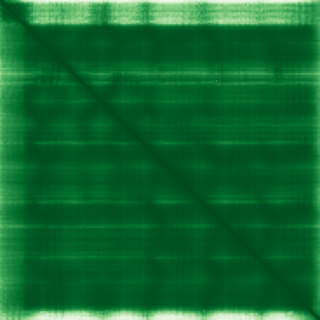

type: protein-evaluation gene: "ARL2" date: 2026-06-03 tags: [protein-scout, rejected, evaluation] status: rejected ---
ARL2 — REJECTED (研究热度过高 (PubMed strict=115，超过100篇阈值))
1. 基本信息
| 项目 | 内容 |
|---|---|
| 基因名 / 别名 | ARL2 |
| 蛋白名称 | ADP-ribosylation factor-like protein 2 |
| 蛋白大小 | 184 aa / 20.9 kDa |
| UniProt ID | P36404 |
| 评估日期 | 2026-06-03 |
2. 评分总览
| 维度 | 得分 | 满分 | 加权后 | 关键证据摘要 |
|---|---|---|---|---|
| 核定位特异性 | 7/10 | ×4 | 28 | HPA: Nucleoplasm, Basal body, Flagellar centriole; 额外: Nucleoli, ; UniProt: Mitochondrion intermembrane space; Cytoplasm, cytoskeleton, |
| 蛋白大小 | 8/10 | ×1 | 8 | 184 aa / 20.9 kDa |
| 研究新颖性 | 0/10 | ×5 | 0 | PubMed strict=115 篇 (>100→REJECTED) |
| 三维结构 | 9/10 | ×3 | 27 | AlphaFold v6 pLDDT=94.3; PDB: 3DOE, 3DOF |
| 调控结构域 | 8/10 | ×2 | 16 | InterPro: IPR045873, IPR044612, IPR027417, IPR005225, IPR006 |
| PPI 网络 | 3/10 | ×3 | 9 | STRING 15 partners; IntAct 15 interactions |
| 互证加分 | — | max +3 | 2.0 | PDB+AF+STRING+IntAct cross-validation |
| 原始总分 | 90.0/180 | |||
| 归一化总分 | 50.0/100 |
3. 详细分析
3.1 核定位证据
| 来源 | 定位 | 可信度 |
|---|---|---|
| Protein Atlas (IF) | Nucleoplasm, Basal body, Flagellar centriole; 额外: Nucleoli, Mitochondria, Equatorial segment, Mid piece | Approved |
| UniProt | Mitochondrion intermembrane space; Cytoplasm, cytoskeleton, microtubule organizing center, centrosom... | Swiss-Prot/TrEMBL |
IF 图像获取: 未下载本地IF图像（standard evaluation），核定位证据基于HPA subcellular localization注释、UniProt注释和GO-CC术语。
GO Cellular Component:
- centriole (GO:0005814)
- centrosome (GO:0005813)
- ciliary basal body (GO:0036064)
- cytoplasm (GO:0005737)
- cytosol (GO:0005829)
- lateral plasma membrane (GO:0016328)
- microtubule cytoskeleton (GO:0015630)
- mitochondrial intermembrane space (GO:0005758)
结论: 主要核定位，HPA 可靠性良好，有辅助数据源支持。
3.2 蛋白大小评估
评价: 大小基本合适，可用于常规实验。
3.3 研究现状
| 指标 | 数值 |
|---|---|
| PubMed strict count | 115 |
| PubMed broad count | 166 |
| 别名(未计入scoring) | 无 |
关键文献: 1. Serum proteomics reveal APOE-ε4-dependent and APOE-ε4-independent protein signatures in Alzheimer's disease.. *Nature aging*. PMID: 39169269 2. Arf-like Protein 2 (ARL2) Controls Microtubule Neogenesis during Early Postnatal Photoreceptor Development.. *Cells*. PMID: 36611941 3. Sorting of lipidated cargo by the Arl2/Arl3 system.. *Small GTPases*. PMID: 27806215 4. Cytosolic Arl2 is complexed with cofactor D and protein phosphatase 2A.. *The Journal of biological chemistry*. PMID: 12912990 5. Arl2- and Msps-dependent microtubule growth governs asymmetric division.. *The Journal of cell biology*. PMID: 26953351
评价: 研究基础较多，新颖性有限。
3.4 三维结构分析
| 指标 | 数值 |
|---|---|
| AlphaFold 版本 | v6 |
| AlphaFold 平均 pLDDT | 94.3 |
| 高置信度残基 (pLDDT>90) 占比 | 87.0% |
| 置信残基 (pLDDT 70-90) 占比 | 7.1% |
| 中等置信 (pLDDT 50-70) 占比 | 6.0% |
| 低置信 (pLDDT<50) 占比 | 0.0% |
| 有序区域 (pLDDT>70) 占比 | 94.1% |
| 可用 PDB 条目 | 3DOE, 3DOF |
PAE: PAE 图像未生成本地文件（standard evaluation），结构判断基于 AlphaFold pLDDT 统计。
评价: PDB实验结构（3DOE, 3DOF）+ AlphaFold高质量预测（pLDDT=94.3），结构可信度高。
3.5 结构域分析
| 来源 | 结构域 |
|---|---|
| InterPro/Pfam | InterPro: IPR045873, IPR044612, IPR027417, IPR005225, IPR006689; Pfam: PF00025 |
染色质调控潜力分析: 多个已知结构域注释，AlphaFold预测质量高，结构域折叠可信。
3.6 PPI 网络
STRING 预测互作 (combined score >0.4):
| Partner | Combined Score | Experimental | 功能类别 |
|---|---|---|---|
| ARL2BP | 0.999 | 0.988 | — |
| UNC119 | 0.997 | 0.977 | — |
| TBCD | 0.996 | 0.967 | — |
| PDE6D | 0.977 | 0.904 | — |
| TUBB2A | 0.803 | 0.645 | — |
| TUBB4B | 0.706 | 0.471 | — |
| TUBB4A | 0.705 | 0.474 | — |
| TUBB2B | 0.704 | 0.472 | — |
| RPGR | 0.681 | 0.000 | — |
| TBCB | 0.670 | 0.000 | — |
实验验证互作 (IntAct):
| Partner | 方法 | PMID | ||
|---|---|---|---|---|
| PDE6D | psi-mi:"MI:0398"(two hybrid pooling approach) | pubmed:16189514 | imex:IM-16520 | |
| ctp | psi-mi:"MI:0018"(two hybrid) | pubmed:14605208 | imex:IM-16524 | |
| Pdha1 | psi-mi:"MI:0018"(two hybrid) | pubmed:14605208 | imex:IM-16524 | |
| RpL35A | psi-mi:"MI:0018"(two hybrid) | pubmed:14605208 | imex:IM-16524 | |
| EBI-1257113 | psi-mi:"MI:0096"(pull down) | imex:IM-15829 | pubmed:23416715 | |
| ARL2BP | psi-mi:"MI:0397"(two hybrid array) | imex:IM-15364 | pubmed:21988832 | |
| VCAM1 | psi-mi:"MI:0030"(cross-linking study) | imex:IM-17358 | pubmed:22623428 | |
| PIN2 | psi-mi:"MI:0663"(confocal microscopy) | pubmed:18047472 | imex:IM-20351 | |
| Dmel\CG13838 | psi-mi:"MI:0018"(two hybrid) | pubmed:14605208 | imex:IM-16524 | |
| EBI-1257121 | psi-mi:"MI:0096"(pull down) | pubmed:19367725 | imex:IM-20587 |
PPI 互证分析:
- STRING + IntAct 均有数据
- STRING partners: 15，IntAct interactions: 15
- 调控相关比例: 0 / 15 = 0%
评价: STRING 15 个预测互作，IntAct 15 个实验互作。调控相关配体占比 0%。
3.7 多库互证
| 维度 | 来源 | 结果 | 是否一致 |
|---|---|---|---|
| 三维结构 | AlphaFold pLDDT=94.3 + PDB: 3DOE, 3DOF | pLDDT=94.3, v6 | 预测+实验 |
| 定位 | UniProt + HPA | Mitochondrion intermembrane space; Cytoplasm, cyto / Nucleoplasm, Basal body, Flagellar centriole; 额外: | 一致 |
| PPI | STRING + IntAct | 15 + 15 interactions | 数据充分 |
互证加分明细:
- PDB + AlphaFold 双源验证: +0.5
- 多库定位一致 (3源): +0.5
- STRING + IntAct 双源验证: +0.5
- 结构域 + AlphaFold 质量: +0.5
- PDB 多条目覆盖: +0
总分: +2.0 / max +3
4. 总体评价
推荐等级: ⭐⭐ (REJECTED)
核心优势: 1. ARL2 — ADP-ribosylation factor-like protein 2，研究基础较多，新颖性有限。 2. 蛋白大小184 aa，大小基本合适，可用于常规实验。
风险/不确定性: 1. PubMed 115 篇，研究热度过高（>100），不符合新颖性要求 2. 结构数据质量可接受
下一步建议:
- [ ] 查阅最新关键文献补充研究背景
- [ ] 获取 Protein Atlas IF 图像确认亚细胞定位
- [ ] 设计体外实验验证核定位及潜在调控功能
该蛋白PubMed文献数 115 > 100，研究热度过高，不符合novelty筛选标准。
5. 数据来源
- UniProt: https://www.uniprot.org/uniprotkb/P36404
- Protein Atlas: https://www.proteinatlas.org/ENSG00000213465-ARL2/subcellular
- PubMed: https://pubmed.ncbi.nlm.nih.gov/?term=ARL2
- AlphaFold: https://alphafold.ebi.ac.uk/entry/P36404
- STRING: https://string-db.org/network/9606.ENSP00000
- Data fetched live: 2026-06-03

